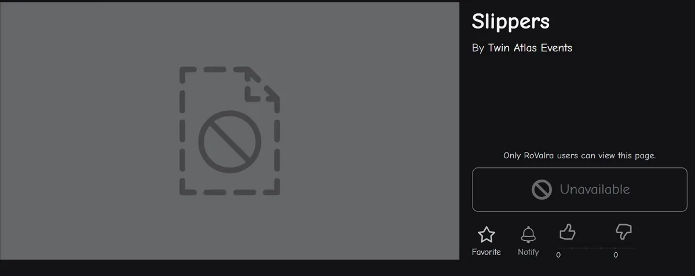
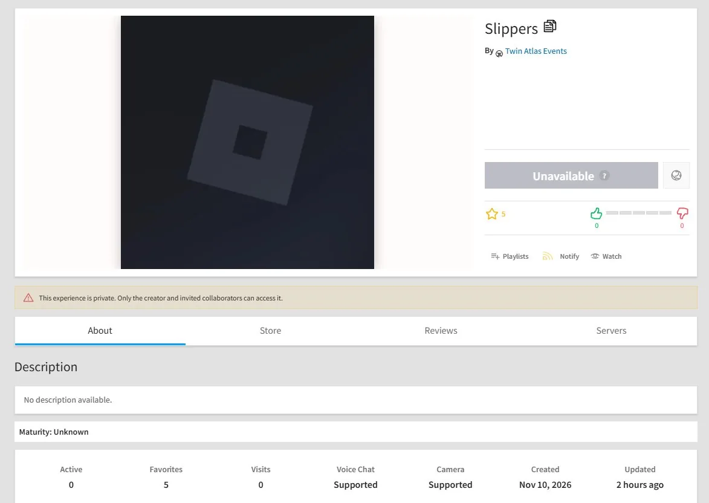

Roblox Christmas Event 2026 Leak: What the Slippers Place Actually Shows
By Fridge · Published · Last updated:
A Roblox Christmas event 2026 leak started spreading on X on November 10, 2026, and it does mention “Slippers.” That word is not a confirmed free item. It is the name of a private test place under the Twin Atlas Events group.
Video Chapters
Planned segments for the matching Fridge video. Each one jumps to the section it covers, so you can read along or skip ahead.
What Leaked: a Place Named Slippers, Not a Slippers Item
If you heard Roblox leaked a Christmas event with slippers as a reward, here is the distinction. The leak is about a Roblox experience titled Slippers, created by the group Twin Atlas Events. Twin Atlas has built hubs for recent official events, including The Hollow in October 2026, as the studio also describes on its own site.
The public link still uses the slug “Slippers” and place ID 92925615265308. Opening the place page without access currently redirects to a “Title Unavailable” view, which matches a private experience, not a launch hub.
@LeaksEvents, a Roblox events tracker with about 79,000 followers, posted the find on November 10, 2026, at 6:52 p.m. Eastern. The account said a new map called Slippers from Twin Atlas Events had just been uploaded, and that it appeared to be the starting point for a winter event in December. The post included a place-card screenshot and a link to the private experience. Other trackers repeated the same finding within hours.

What the Screenshots Actually Show
A fuller experience-page screenshot was posted the same evening by @NotifierFreeUGC, at 9:27 p.m. Eastern. It is the most detailed image we can trace to a source, and it is worth reading line by line instead of treating “Christmas event confirmed” captions as facts.
- Title: Slippers, by Twin Atlas Events.
- Access: a banner reading “This experience is private. Only the creator and invited collaborators can access it.” The play button is labeled Unavailable.
- Description: “No description available.” Maturity is listed as unknown.
- Stats: 0 people active, 0 visits, 0 likes and 5 favorites at the time of the screenshot.
- Created: November 10, 2026. The same screenshot said it was updated “2 hours ago” when it was taken.

@RBXEventHunters, a larger events account with about 339,000 followers, posted the same place on November 11, 2026, at 6:58 a.m. Eastern, and said Twin Atlas had “recently renamed one of their unused test places to ‘Slippers.’” That wording differs slightly from the experience page, which shows a created date of November 10, 2026. We cannot see Twin Atlas’s internal history, so we report both. The visible facts are the name, the group, and that the place is private. Some screenshots also mention a third-party extension; the official banner on the page is simply that the experience is private.
Who Reported It, and How Widely
This is not a single unverified post. After @LeaksEvents, the same private place was reported by @Xh0PlUgc (10:12 p.m. Eastern on November 10), @NotifierFreeUGC, @RBXEventHunters on the morning of November 11, and smaller accounts that restated the same screenshots. @LeaksEvents also replied that official hubs later go public under Roblox Presents, but are developed in Twin Atlas Events, a pattern the account said dates back to the 2023 RIA Watch Party. That studio connection is why trackers jumped to “Christmas event.” It does not, by itself, prove the next event is a Christmas event, that it starts in December, or that players will receive slippers as an item.
What’s Confirmed, What’s Rumor, and What’s Official
Here is the clean split, as of November 11, 2026:
| Claim | Status | Source |
|---|---|---|
| A private place titled Slippers exists under Twin Atlas Events (place ID 92925615265308) | Supported by multiple dated posts and the place URL | @LeaksEvents, @NotifierFreeUGC, the Roblox place link |
| The experience was private, had no public description, and showed 0 visits on November 10 | Shown in the experience-page screenshot | @NotifierFreeUGC |
| The public page lists a created date of November 10, 2026 | Shown in that screenshot | @NotifierFreeUGC |
| Twin Atlas has built hubs for recent official Roblox events | Consistent with the studio’s own site and recent events such as The Hollow | Twin Atlas, Hollow recap |
| Slippers is early work on a Roblox Christmas event 2026, starting in December | Rumor / interpretation | Wording used by @LeaksEvents, @Xh0PlUgc, @RBXEventHunters and others |
| Players will get a slippers item, event codes, or a named reward list | Not found | No source we checked listed official items or codes |
| Roblox has officially announced a 2026 Christmas or winter event, with dates | Not found on official channels we checked on November 11, 2026 | @Roblox and @roblox_jp searches, no DevForum announcement located |
The Unverified “Halloween’s Over” Santa Tease
A separate claim circulated a few days earlier. On November 6, 2026, @MattipavRBX said an official Roblox tweet captioned “Halloween’s over huh” had shown a Santa Claus video, and called it a December tease. Replies mentioned a Japan-account post that may have been taken down. We looked for a still-live post from @Roblox or @roblox_jp with that caption and did not find one. The image on Mattipav’s post is a fan graphic, not a screenshot of an official tweet. Until the original official post can be produced and checked, treat this tease as unverified.
No Event Codes, Item Lists or Start Dates Yet
We did not find a code list, reward table, start time or official name for a platform-wide Roblox Christmas event 2026. If a site already lists “leaked slippers” as a redeemable accessory, or sells a “Christmas code generator,” that is not supported by the posts above. Real event items come from official event pages, in-game quests or the Avatar Shop. For codes we do recheck, use our Roblox codes hub for November 2026, and for safe freebies see how to get free items in Roblox.
This also does not confirm Christmas updates inside individual games. Those would be separate, per-game updates if they happen, not the same thing as a Twin Atlas platform hub.
How to Get Ready Without Getting Ahead of Roblox
Until Roblox posts an official event page, there is no hub to join and no official way to “get slippers early.” Watch official Roblox channels, treat place-name leaks as early signals rather than patch notes, and do not log into third-party “claim” sites. Real rewards show up in an official event or in your inventory. For official gift-card redemption only, see our Roblox gift card guide.
We will update this Roblox Christmas event 2026 leak page if Roblox confirms a name, dates or rewards, or if the Slippers place changes. a private Twin Atlas Events place called Slippers appeared on November 10, 2026, and trackers think it may precede a winter event.
Sources
- LeaksEvents: Slippers place under Twin Atlas Events (Nov 10, 2026, 6:52 p.m. Eastern)
- NotifierFreeUGC: experience-page screenshot, created Nov 10, 2026 (Nov 10, 9:27 p.m. Eastern)
- RBXEventHunters: Slippers place, possible winter or Christmas event (Nov 11, 2026, 6:58 a.m. Eastern)
- Xh0PlUgc: Slippers map uploaded by Twin Atlas Events (Nov 10, 2026, 10:12 p.m. Eastern)
- Roblox place page for Slippers (place ID 92925615265308; currently private)
- Twin Atlas: official studio site, including Roblox event work
- Our recap of The Hollow, Roblox's last finished platform-wide event in 2026
Roblox FAQ
Is there a confirmed Roblox Christmas event in 2026?
Not as of November 11, 2026. We could not find a still-live official announcement with a name, dates or rewards.
What is Slippers in the Roblox Christmas 2026 leak?
It is the title of a private Twin Atlas Events experience, place ID 92925615265308, not a confirmed wearable item.
When was the Slippers place created?
A @NotifierFreeUGC screenshot of the experience page, posted November 10, 2026, shows a created date of November 10, 2026, and a private-access banner.
Who first posted the Slippers leak?
The earliest widely seen report we found is @LeaksEvents on November 10, 2026, at 6:52 p.m. Eastern. Other trackers followed the same night and the next morning.
Will there be Roblox Christmas event 2026 codes?
None have been published by official channels or by the leak posts we checked. Ignore third-party generators.
Did Roblox already tease Christmas with a Santa video?
Some accounts said a since-removed official post used a Santa clip and a 'Halloween’s over huh' caption. We could not find that post still live, so it is unverified.
Found this helpful? Subscribe to Fridge on YouTube for new Roblox videos. This guide is re-checked against official Roblox sources when things change.